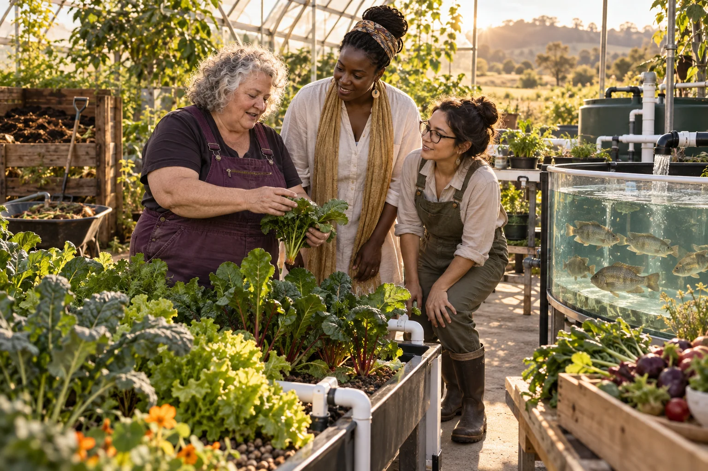

Choose a specific cooking task customers find inconvenient and document what they use now.

500 Queens / Legumes
Legumes
Build convenient legume products and supply relationships around how people actually cook and eat.
Follow the connections. Choose your direction.
The need worth working on.
A familiar crop can still support a useful enterprise when preparation, packaging, distribution or cultural fit is improved. The question is not whether legumes are fashionable, but whether a particular customer needs a product that saves time, tastes good and fits their budget. Growers and food makers need dependable demand as well.
What the enterprise could offer.
Explore a ready-to-use ingredient, shared meal component or local procurement service with existing growers and food businesses. Invite customers from different household sizes, cultural backgrounds and work patterns. Women with cooking, farming or community-organising experience can lead product decisions and retain credit for the knowledge they contribute.
People to build with
- Busy households
- Community kitchens and food businesses
- Growers and ingredient suppliers
From a cooking problem to a repeat order
Develop a sample with qualified food support, including packaging, storage and clear ingredient information.
Test preparation time, taste and portion usefulness with a varied customer group.
Offer a small authorised repeat-order trial and compare actual uptake with initial enthusiasm.
The first result
A product specification, customer-use results and a supplier-to-buyer operating plan.
What needs to be demonstrated.
Practical pilot
The starting evidence
Legumes are an original food-enterprise suggestion. No particular product, nutrition outcome or supply contract is established.
The open question
Whether a convenient product can command enough repeat demand to cover preparation, packaging and distribution.
The next measurement
Repeat orders, preparation time saved, accepted product quality and avoidable waste.
Build the means to deliver.
Useful capabilities and resources
- Qualified food production
- Willing customers
- Reliable ingredient supplier
A possible business model
Explore prepared ingredients, wholesale supply or a subscription through an existing licensed operator, using actual order sizes and delivery costs.
A leadership decision to practise
Decide how customer affordability and producer returns will be balanced, especially where transport makes regional food expensive.
People, consequences and decisions.
- Packaging can erase apparent savings.
- Small orders may make distribution uneconomic.
- One recipe or portion size may not suit the intended community.
If equality were being designed now...
- Would the legume product save preparation time while fitting women's own food traditions, tastes and budgets?
- Are women contributing recipes, growing knowledge or community relationships paid and included in product decisions?
Begin with women's own experiences across bodies, ages, cultures and places. Invite disagreement and choose a practical change together.
Create a women-led design brief →Build your learning council.


Build alongside these ideas.
Closed-loop foodSuperfoods
Turn the broad superfoods label into a clearly described, enjoyable and honestly marketed food product.
Practical pilot
Closed-loop foodFood Compute/Produce DAO
Coordinate food demand and production through a practical shared planning service.
Practical pilot
Market analysisAgriculture and Aquaculture
Find food-production opportunities by tracing one product from grower or producer to a willing customer.
Practical pilot
Follow existing public concept work.
Connected public conceptStraddie Market Onboarding
A public toolkit helps stallholders, artists, food providers, venues and organisers prepare useful market information.
Connected public conceptMutual Futures
Explore how retiring business owners, workers and communities could build shared ownership, reliable livelihoods and more time for life.
From the original suggestion to a working brief.
Original concept from 500 Queens VC NEW Long, slide 16; current context from the September 2026 planning document. This expanded brief and pilot are proposed development, not evidence of an operating enterprise or confirmed partnership.
Original title: Legumes. The pilot, business model and learning connections on this page are proposed developments of that original idea.